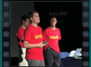
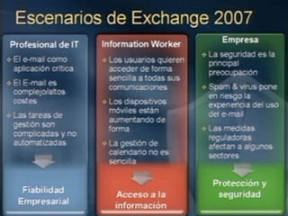
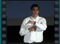
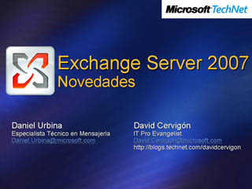
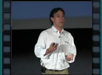
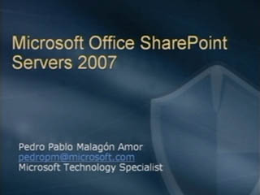
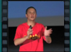
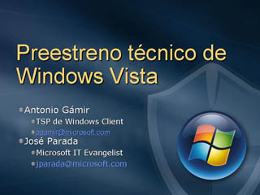
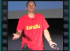

Novedades de Exchange Server 2007 - 1


Speaker(s): Daniel Urbina, David Cervigón
Novedades de Exchange Server 2007 - 2


Speaker(s): Daniel Urbina, David Cervigón
Presentación Técnica de Windows Vista - 1


Speaker(s): Antonio Gámir, José Parada
Presentación Técnica de Windows Vista - 2


Speaker(s): Antonio Gámir, José Parada
Presentación Técnica de Windows Vista - 3

Speaker(s): Antonio Gámir, José Parada